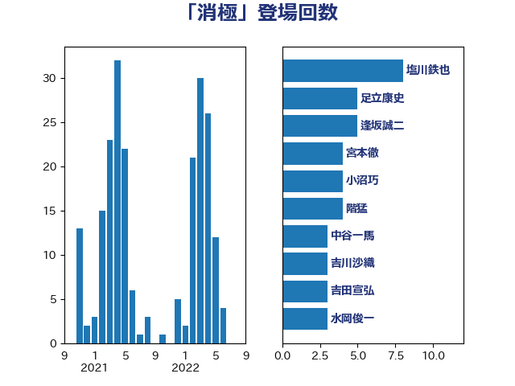

単語「消極」

| 塩川鉄也 | 日本共産党 | 8 回 |
| 足立康史 | 日本維新の会 | 5 回 |
| 逢坂誠二 | 立憲民主党 | 5 回 |
| 宮本徹 | 日本共産党 | 4 回 |
| 小沼巧 | 立憲民主党 | 4 回 |
| 階猛 | 立憲民主党 | 4 回 |
| 中谷一馬 | 立憲民主党 | 3 回 |
| 吉川沙織 | 立憲民主党 | 3 回 |
| 吉田宣弘 | 公明党 | 3 回 |
| 水岡俊一 | 立憲民主党 | 3 回 |
| 沢田良 | 日本維新の会 | 3 回 |
| 音喜多駿 | 日本維新の会 | 3 回 |
| 高橋千鶴子 | 日本共産党 | 3 回 |
| 伊藤岳 | 日本共産党 | 2 回 |
| 勝部賢志 | 立憲民主党 | 2 回 |
| 吉田忠智 | 立憲民主党 | 2 回 |
| 太栄志 | 立憲民主党 | 2 回 |
| 安江伸夫 | 公明党 | 2 回 |
| 岡田克也 | 立憲民主党 | 2 回 |
| 川田龍平 | 立憲民主党 | 2 回 |
| 打越さく良 | 立憲民主党 | 2 回 |
| 枝野幸男 | 立憲民主党 | 2 回 |
| 柳ヶ瀬裕文 | 日本維新の会 | 2 回 |
| 片山大介 | 日本維新の会 | 2 回 |
| 牧山ひろえ | 立憲民主党 | 2 回 |
| 田村まみ | 国民民主党 | 2 回 |
| 田村憲久 | 自由民主党 | 2 回 |
| 石垣のりこ | 立憲民主党 | 2 回 |
| 福島みずほ | 社会民主党 | 2 回 |
| 舩後靖彦 | れいわ新選組 | 2 回 |
| 西村康稔 | 自由民主党 | 2 回 |
| 谷田川元 | 立憲民主党 | 2 回 |
| 重徳和彦 | 立憲民主党 | 2 回 |
| 野田聖子 | 自由民主党 | 2 回 |
| 長妻昭 | 立憲民主党 | 2 回 |
| 長峯誠 | 自由民主党 | 2 回 |
| 青木愛 | 立憲民主党 | 2 回 |
| ながえ孝子 | 無所属 | 1 回 |
| 三原じゅん子 | 自由民主党 | 1 回 |
| 上川陽子 | 自由民主党 | 1 回 |
| 上野通子 | 自由民主党 | 1 回 |
| 下条みつ | 立憲民主党 | 1 回 |
| 中司宏 | 日本維新の会 | 1 回 |
| 中谷真一 | 自由民主党 | 1 回 |
| 串田誠一 | 日本維新の会 | 1 回 |
| 伊佐進一 | 公明党 | 1 回 |
| 伊藤孝江 | 公明党 | 1 回 |
| 佐藤英道 | 公明党 | 1 回 |
| 古川禎久 | 自由民主党 | 1 回 |
| 古賀友一郎 | 自由民主党 | 1 回 |
| 嘉田由紀子 | 無所属 | 1 回 |
| 國重徹 | 公明党 | 1 回 |
| 堀場幸子 | 日本維新の会 | 1 回 |
| 堤かなめ | 立憲民主党 | 1 回 |
| 塩村あやか | 立憲民主党 | 1 回 |
| 塩田博昭 | 公明党 | 1 回 |
| 大串博志 | 立憲民主党 | 1 回 |
| 大島敦 | 立憲民主党 | 1 回 |
| 大西健介 | 立憲民主党 | 1 回 |
| 宮本岳志 | 日本共産党 | 1 回 |
| 小川淳也 | 立憲民主党 | 1 回 |
| 尾崎正直 | 自由民主党 | 1 回 |
| 山下芳生 | 日本共産党 | 1 回 |
| 山本太郎 | れいわ新選組 | 1 回 |
| 山田賢司 | 自由民主党 | 1 回 |
| 山際大志郎 | 自由民主党 | 1 回 |
| 岸田文雄 | 自由民主党 | 1 回 |
| 岸真紀子 | 立憲民主党 | 1 回 |
| 後藤祐一 | 立憲民主党 | 1 回 |
| 徳永エリ | 立憲民主党 | 1 回 |
| 本村伸子 | 日本共産党 | 1 回 |
| 杉久武 | 公明党 | 1 回 |
| 梅村みずほ | 日本維新の会 | 1 回 |
| 浅野哲 | 国民民主党 | 1 回 |
| 浜田聡 | NHK党 | 1 回 |
| 浮島智子 | 公明党 | 1 回 |
| 熊谷裕人 | 立憲民主党 | 1 回 |
| 田村智子 | 日本共産党 | 1 回 |
| 磯崎仁彦 | 自由民主党 | 1 回 |
| 神津たけし | 立憲民主党 | 1 回 |
| 福山哲郎 | 立憲民主党 | 1 回 |
| 秋野公造 | 公明党 | 1 回 |
| 稲田朋美 | 自由民主党 | 1 回 |
| 笠浩史 | 無所属 | 1 回 |
| 緑川貴士 | 立憲民主党 | 1 回 |
| 緒方林太郎 | 無所属 | 1 回 |
| 舟山康江 | 国民民主党 | 1 回 |
| 芳賀道也 | 国民民主党 | 1 回 |
| 若松謙維 | 公明党 | 1 回 |
| 茂木敏充 | 自由民主党 | 1 回 |
| 菅直人 | 立憲民主党 | 1 回 |
| 西村智奈美 | 立憲民主党 | 1 回 |
| 角田秀穂 | 公明党 | 1 回 |
| 野田佳彦 | 立憲民主党 | 1 回 |
| 金城泰邦 | 公明党 | 1 回 |
| 馬場伸幸 | 日本維新の会 | 1 回 |
| 高良鉄美 | 無所属 | 1 回 |